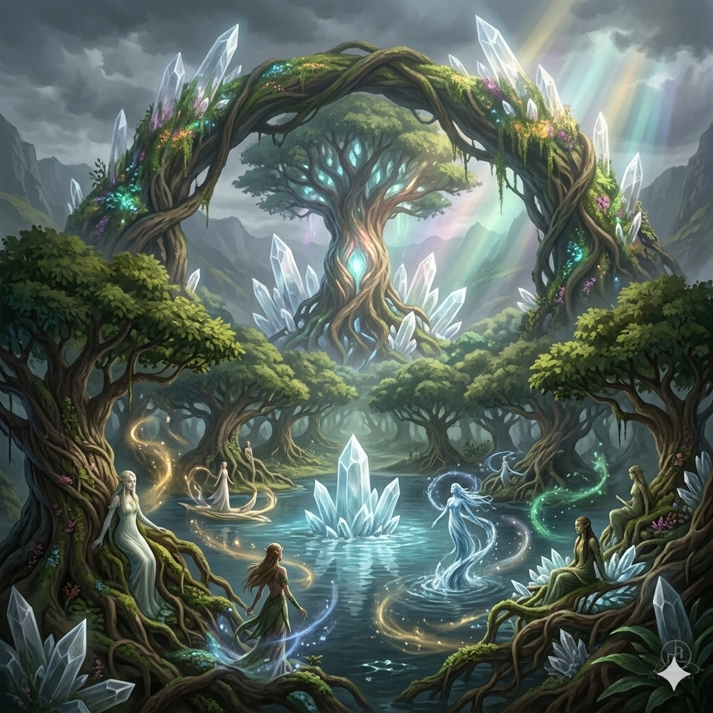
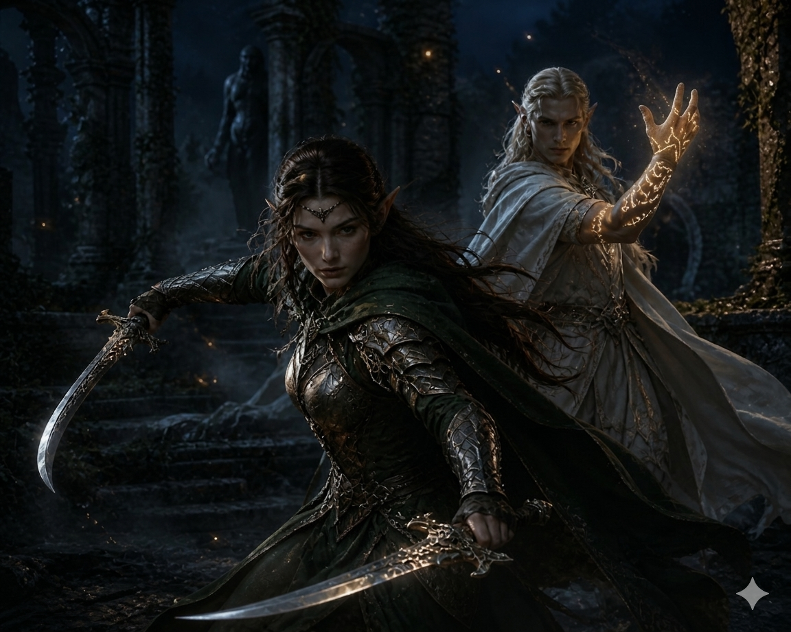

You have chosen Elves

Origin
Elves were the first to awaken in Eldora, not as migrants or wanderers, but as the world’s intended inhabitants. Eldora itself was not stumbled upon—it was crafted, shaped, or summoned by unknown forces as a sanctuary for its first people: the elves. Born from the convergence of natural and arcane energies, they emerged in sacred groves, ancient waters, and places where the essence of the world runs deepest. Tall, graceful, and deeply attuned to both nature and magic, the first elves embodied balance and harmony, forming the earliest civilization in Eldora. Over time, variations in the forces that shaped them gave rise to distinct lineages, each bound to a different aspect of the world’s essence.
In the ages before other races arrived, elves lived in near-perfect equilibrium with Eldora, shaping their surroundings in harmony rather than conquest. Their connection to the world runs deeper than knowledge—it is instinct, memory, and identity intertwined. Yet this bond also binds them to its fate; as Eldora changes, so too do they. While others came seeking refuge or opportunity, the elves remained what they had always been: the living reflection of a world that was once whole.

Culture and Way of Life
Elven society is shaped by continuity, balance, and a deep awareness of time. Where other races build quickly and expand relentlessly, elves cultivate and refine, allowing their settlements to grow in harmony with their surroundings. Cities are not imposed upon the land but woven into it—forests become homes, rivers become pathways, and ancient sites are preserved rather than replaced. Their culture values patience, mastery, and understanding, with individuals often dedicating decades, even centuries, to perfecting a single craft or discipline.
Despite their shared origin, elven culture is not uniform. Different lineages develop distinct traditions based on the aspect of Eldora they are bound to—some live in quiet communion with nature, others pursue arcane knowledge, while a few act as guardians of sacred places and ancient truths. What unites them is a common perspective: life is not a race to be won, but a balance to be maintained. This long view grants them wisdom, but also distance—elves can appear detached or slow to act, especially when faced with the urgency and ambition of younger races.

Strengths and Weaknesses
Elves possess an innate attunement to both magic and the natural flow of Eldora, granting them heightened perception, agility, and precision. Their long lifespans allow them to refine skills to an extraordinary degree, whether in combat, craft, or arcane study, making them masters of their chosen disciplines. This connection also gives them a natural harmony in motion and thought—elves often act with clarity and efficiency, wasting little effort and striking with deliberate intent rather than brute force.
However, this same nature can become a limitation. Their deep connection to balance and tradition often makes them resistant to rapid change, and their long view of time can lead to hesitation in moments that demand urgency. Elves may struggle with unpredictability, improvisation, or reckless action, especially when faced with opponents who thrive in chaos. Their tendency toward detachment can also distance them from other races, making cooperation difficult and sometimes causing them to underestimate the speed and ambition of those who live shorter, more volatile lives.

Beliefs
Elven belief is rooted in balance, continuity, and the unseen harmony that binds all things within Eldora. They do not worship gods in the conventional sense, but instead revere the living principles that shape existence—life, decay, growth, and renewal—as expressions of the world’s natural order. To the elves, Eldora is not a place to be ruled or mastered, but a living system that must be understood and preserved. Every action carries weight, and every disruption to balance is seen as a ripple that may echo across generations.
Because of this worldview, elves measure morality less by intention and more by consequence. Preservation is valued above expansion, and wisdom is often preferred over action. However, this belief also divides elven thought—some interpret balance as strict preservation of the old ways, while others believe balance requires adaptation and quiet evolution. In all interpretations, one truth remains constant: existence is cyclical, and to exist in Eldora is to be part of that cycle, whether as guardian, observer, or guide.

Battle Style
Elves fight with precision, control, and an almost effortless grace, treating combat as an extension of balance rather than a descent into chaos. They favor timing over force, positioning over aggression, and mastery over brute strength. Whether wielding blade, bow, or magic, their strikes are deliberate and efficient, aimed to end conflict swiftly with minimal waste. Many elven warriors blend physical skill with arcane or natural energies, allowing them to adapt fluidly between offense and defense while maintaining control of the battlefield’s flow.
Rather than overwhelming enemies, elves seek to outmaneuver and outthink them—striking at openings, exploiting weaknesses, and withdrawing before retaliation can take hold. This makes them exceptionally dangerous in prolonged engagements, where patience and discipline turn the tide in their favor. However, their reliance on precision and control can leave them vulnerable in chaotic or unpredictable situations, where raw force and relentless aggression can disrupt their rhythm and push them out of balance.
To Which Ancestral Lineage Are You Bound?
Each ancestral lineage carries an ancient bond—shaping how you see, feel, and move through the world.
Ancestral Lineage Traits